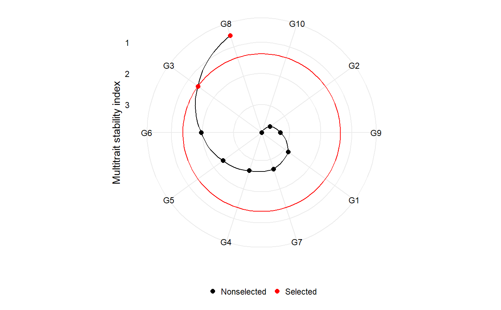

MTSI.RdMultitrait stability index in analysis of multi-environment trials using AMMI or BLUP methods.
MTSI(x, index = "WAASB", show = TRUE, SI = 15, mineval = 1)
| x | An object of class |
|---|---|
| index | If |
| show | If |
| SI | An integer [0-100]. The selection intensity in percentage of the total number of genotypes. |
| mineval | The minimum value so that an eigenvector is retained in the factor analysis. |
library(METAAB) # Based on stability only MTSI_MODEL = WAASB(data_ge, resp = c(GY, HM), gen = GEN, env = ENV, rep = REP)#> Evaluating variable GY 50 % #> Evaluating variable HM 100 % #> Done!MTSI_index = MTSI(MTSI_MODEL)#> #> ------------------------------------------------------------------------------- #> Principal Component Analysis #> ------------------------------------------------------------------------------- #> Eigenvalues Variance (%) Cum. variance (%) #> PC1 1.6566277 82.83139 82.83139 #> PC2 0.3433723 17.16861 100.00000 #> #> ------------------------------------------------------------------------------- #> Factor Analysis - factorial loadings after rotation- #> ------------------------------------------------------------------------------- #> FA1 Communality Uniquenesses #> GY 0.9101175 0.8283139 0.1716861 #> HM 0.9101175 0.8283139 0.1716861 #> #> ------------------------------------------------------------------------------- #> Comunalit Mean: 0.8283139 #> #> ------------------------------------------------------------------------------- #> Multitrait stability index #> ------------------------------------------------------------------------------- #> G3 G1 G6 G8 G4 G2 G9 G5 G7 G10 #> 0.0000 0.2303 0.4846 1.0066 1.2954 1.6022 1.8318 1.8374 1.8450 3.4178 #> #> ------------------------------------------------------------------------------- #> Selection differential #> ------------------------------------------------------------------------------- #> Factor Xo Xs SD SDperc #> GY FA1 0.2504736 0.1165028 -0.1339708 -53.48700 #> HM FA1 0.6141648 0.3732404 -0.2409244 -39.22798 #> #> ------------------------------------------------------------------------------ #> Mean of selection differential #> ------------------------------------------------------------------------------- #> Xo Xs SD SDperc #> 0.4323192 0.2448716 -0.1874476 -46.3574864 #> #> ------------------------------------------------------------------------------ #> Selected genotypes #> G3 G1 #> -------------------------------------------------------------------------------# Based on mean performance and stability MTSI_MODEL2 = WAASB(data_ge, resp = c(GY, HM), gen = GEN, env = ENV, rep = REP, mresp = c(100, 100), #Default wresp = c(65, 65))#> Evaluating variable GY 50 % #> Evaluating variable HM 100 % #> Done!MTSI_index2 = MTSI(MTSI_MODEL2, index = "WAASBY")#> #> ------------------------------------------------------------------------------- #> Principal Component Analysis #> ------------------------------------------------------------------------------- #> Eigenvalues Variance (%) Cum. variance (%) #> PC1 1.1607779 58.03889 58.03889 #> PC2 0.8392221 41.96111 100.00000 #> #> ------------------------------------------------------------------------------- #> Factor Analysis - factorial loadings after rotation- #> ------------------------------------------------------------------------------- #> FA1 Communality Uniquenesses #> GY 0.7618326 0.5803889 0.4196111 #> HM 0.7618326 0.5803889 0.4196111 #> #> ------------------------------------------------------------------------------- #> Comunalit Mean: 0.5803889 #> #> ------------------------------------------------------------------------------- #> Multitrait stability index #> ------------------------------------------------------------------------------- #> G8 G3 G6 G5 G4 G7 G1 G9 G2 G10 #> 0.6247 1.3687 1.9646 2.3690 2.6194 2.6730 2.8470 3.3023 3.5643 3.9014 #> #> ------------------------------------------------------------------------------- #> Selection differential #> ------------------------------------------------------------------------------- #> Factor Xo Xs SD SDperc #> GY FA1 45.27838 89.10815 43.82978 96.80068 #> HM FA1 57.03502 74.72083 17.68581 31.00868 #> #> ------------------------------------------------------------------------------ #> Mean of selection differential #> ------------------------------------------------------------------------------- #> Xo Xs SD SDperc #> 51.15670 81.91449 30.75779 63.90468 #> #> ------------------------------------------------------------------------------ #> Selected genotypes #> G8 G3 #> -------------------------------------------------------------------------------plot(MTSI_index2)